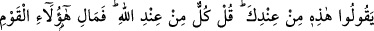
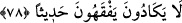

78- Nerede olursanız olun ölüm size ulaşır; sarp ve sağlam kalelerde olsanız bile!
Kendilerine bir iyilik dokunsa «Bu Allah’tan» derler; başlarına bir kötülük gelince
de «Bu senden» derler. «Hepsi Allah’tandır» de. Bu adamlara ne oluyor ki bir türlü
laf anlamıyorlar!
“Nerede olursanız olun” vakti takdir edilen “ölüm” yâhut azap “size ulaşır.”
Âyetteki “ulaşır, yakalar” mânâsındaki “idrak” lafzında onların ölümden kaçmakta
olduklarına, ölümün ise onların peşini bırakmayacağına işâret edilmektedir. “Sarp ve
sağlam kalelerde olsanız bile!” Yâni, göğe kadar çıkan yüksek, gayet muhkem olarak
yapılmış, insanoğlunun çıkamayacağı kasırlarda da bulunsanız ölüm size ulaşır.
Ümmet-i Muhammed, ölümün belirli bir yaşı, belirli bir müddeti ve belirli bir
hastalığı bulunmadığı husûsunda icmâ etmişlerdir. İşte bu kişinin her zaman ölüme
hazırlıklı olmasını temin etmek içindir. Hz. Peygamber (a.s) şöyle buyurmuştur:
“Lezzetleri sona erdiren ölümü çok hatırlayın!”
Bu hadis çok kısa veciz bir kelamdır. Bütün öğütleri kendinde toplamış en tesirli
nâsihattır. Çünkü ölümü hakkıyla hatırlayan kişiye hal-i hâzırdaki lezzetler zehir olur.
Gelecekte de bu lezzetleri temennî etmekten, ona arzuladığı zevklerden de el çekmesini
sağlar. Ne var ki tembel nefisler ile gafil kalpler, uzun uzun öğüde ve kendilerine süslü
sözler söylenmesine muhtaçtırlar. Yoksa Allah Teâlâ’nın “Her can ölümü tadacaktır”
(Al-i İmran, 3/185) âyetiyle Peygamber Efendimiz (a.s)’ın: “Lezzetleri sona erdiren
ölümü çok hatırlayın.”[84] hadisi dinleyene yeter ve üzerinde düşüneni gerektiği kadar
meşgul eder.
Hâfız (k.s.) şöyle der:
Felek bir kalburdur, kan eleyen ve saçan
Damlaları da kisra [Nuşirevan] başı ve Pervîn tâcı
Sa’dî de şöyle diyor:
Dünya mülkü ebedî değildir ey oğul!
Dünyadan vefakarlık da beklenmez
Sabah akşam götürürdü rüzgar
Tahtını Süleyman aleyhisselâmın
Sonunda görmedin mi rüzgara verdi
Mes’ud kimse, ilim ve adaletle irtihal etti
“Kendilerine” bolluk gibi “bir iyilik” bir nimet “dokunsa” bunu Allah’a nisbet
ederek: “Bu Allah’tan” derler. Başlarına” kıtlık gibi “bir kötülük” bir belâ “gelince